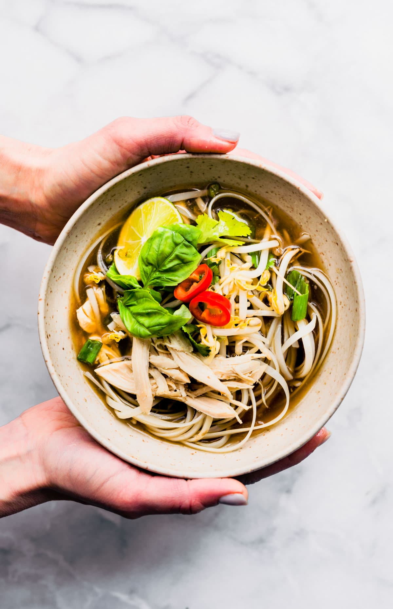

Pho is a soup consisting of bone broth, rice noodles, thinly-sliced meat (in this recipe, it's beef), and fresh garnishes.
Authentic, Vietnamese pho soup is all about the broth! Beef bones, fish sauce, star anise, and ginger simmer for at least 6 hours, creating a complex, aromatic broth that may not be quick,
but it's certainly delicious. The flavorful broth is ladled over rice noodles and thinly sliced beef and topped with fresh garnishes. The total time to complete this recipe is about
8 hours and 25 minutes; moreover, it will produce 4 servings.
- 4 pounds beef soup bones (shank and knee)
- 1 medium onion, unpeeled and cut in half
- 5 slices fresh ginger
- 1 tablespoon salt
- 2 pods star anise
- 2 ½ tablespoons fish sauce
- 4 quarts water
- 1 (8 ounce) package dried rice noodles
- 1 ½ pounds beef top sirloin, thinly sliced
- ½ cup chopped cilantro
- 1 ½ cups bean sprouts
- 1 tablespoon chopped green onion
- 1 bunch Thai basil
- 1 medium lime, cut into 4 wedges
- ¼ cup hoisin sauce (Optional)
- ¼ cup chile-garlic sauce (such as Sriracha®) (Optional)
- Gather all ingredients.
- Preheat the oven to 425 degrees F (220 degrees C).
- Place beef bones on a baking sheet and roast in the preheated oven until browned, about 1 hour.
- Place onion halves on a second baking sheet and roast on another rack until blackened and soft, about 45 minutes.
- Transfer beef bones and onion halves to a large stockpot. Add ginger, salt, star anise, fish sauce, and 4 quarts water; bring to a boil. Reduce heat to low and simmer for 6 to 10 hours.
Strain the broth into a saucepan and set aside.
- Place rice noodles in a large bowl filled with room temperature water. Let soak for 1 hour. Drain.
- When noodles have soaked for 1 hour, heat up the reserved broth by bringing it to a simmer.
- Bring a large pot of water to a boil. Cook the noodles in the boiling water for 1 minute. Drain.
- Divide noodles among 4 serving bowls; top with sirloin, cilantro, and green onion. Ladle hot broth over the top. Stir and let sit until beef is partially cooked and no longer pink, 1 to 2 minutes.
- Serve with bean sprouts, Thai basil, lime wedges, hoisin sauce, and chile-garlic sauce on the side.